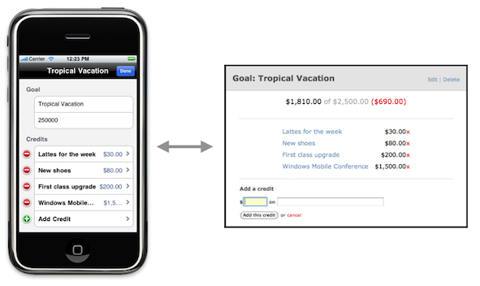

Nested Resources
Task: Goals and Credits

ObjectiveResource
- ObjectiveResource is an Objective-C port of ActiveResource
- Automatically serializes/deserializes objects (to/from JSON or XML)
- Assumes Rails’ RESTful conventions
- Supports nested resources
- Synchronous, but with asynchronous option
Remote Resource (.h)
Remote methods added to NSObject:
#import "ObjectiveResource.h"
@interface Goal : NSObject {
NSString *name;
NSString *amount;
NSString *goalId;
NSDate *createdAt;
NSDate *updatedAt;
}
@property (nonatomic, copy) NSString *name;
@property (nonatomic, copy) NSString *amount;
@property (nonatomic, copy) NSString *goalId;
@property (nonatomic, retain) NSDate *createdAt;
@property (nonatomic, retain) NSDate *updatedAt;
@endRemote Resource (.m)
Nothing special here:
#import "Goal.h"
@implementation Goal
@synthesize name;
@synthesize amount;
@synthesize goalId;
@synthesize createdAt;
@synthesize updatedAt;
- (void)dealloc {
[name release];
[amount release];
[goalId release];
[createdAt release];
[updatedAt release];
[super dealloc];
}
@endConfiguration
#import "ObjectiveResource.h" [ObjectiveResourceConfig setSite:@"http://your-server/"]; [ObjectiveResourceConfig setResponseType:JSONResponse];
Remote CRUD Operations
NSArray *goals = [Goal findAllRemote];
Goal *goal = [[Goal alloc] init]; goal.name = @"Tropical Vacation"; [goal createRemote];
Goal *goal = [Goal findRemote:@"3"]; goal.name = @"Donation"; [goal updateRemote];
[goal destroyRemote];
1. Switcheroo
- Switch back to the iPhone app in the
code/4-cruddirectory- This version uses our custom
Resourceclass
- This version uses our custom
- Copy it to a new directory so you don’t overwrite the original
2. Add the objectiveresource library
- Use Finder to locate the
code/staged/objectiveresourcedirectory - Drag and drop it on the Classes group in the Groups & Files menu of your Xcode project
- Make sure to select the Copy items into destination group’s folder option
- Delete the
json-frameworkdirectory - Build as a sanity check
3. Clean House
- Import ObjectiveResource in
Goal.h:
#import "ObjectiveResource.h"
- Remove all the custom CRUD methods in
Goal
- Delete the
Resourceclass
4. Configure ObjectiveResource
In SaveUpAppDelegate.m, add an import:
#import "ObjectiveResourceConfig.h"
And configure ObjectiveResource in application:didFinishLaunchingWithOptions::
[ObjectiveResourceConfig setSite:@"http://localhost:3000/"]; [ObjectiveResourceConfig setResponseType:JSONResponse];
5. Tweak Rails
Add an initializer that includes:
ActiveRecord::Base.include_root_in_json = true
ObjectiveResource expects JSON responses to include the resource name
6. Run It!
- Create, edit, and delete a goal
- Watch the Rails log
- Is everything in sync with the Rails app?
- No visible app changes
- Less code to maintain
- But it’s synchronous…
At this point, we’ve replicated the app in
code/6-objectiveresource
What We Have

Asynchronous Way
- 1.1 branch has a
ConnectionManagersingleton - It encapsulates an operation queue
- We understand how it works:
- (void)runJob:(SEL)selector
onTarget:(id)target
withArgument:(id)argument {
NSInvocationOperation *operation = [[NSInvocationOperation alloc]
initWithTarget:target selector:selector object:argument];
[operationQueue addOperation:operation];
[operation release];
}7. Send requests in background
For example, change refresh from:
- (IBAction)refresh {
[UIApplication sharedApplication].networkActivityIndicatorVisible = YES;
self.goals = [Goal findAllRemote];
[self.tableView reloadData];
[UIApplication sharedApplication].networkActivityIndicatorVisible = NO;
}To run a background job instead:
- (IBAction)refresh {
[UIApplication sharedApplication].networkActivityIndicatorVisible = YES;
[[ConnectionManager sharedInstance] runJob:@selector(fetchRemoteGoals)
onTarget:self];
}8. Handle response async
Write the method that runs on a separate thread:
- (void)fetchRemoteGoals {
self.goals = [Goal findAllRemote];
[self.tableView performSelectorOnMainThread:@selector(reloadData)
withObject:nil
waitUntilDone:NO];
[UIApplication sharedApplication].networkActivityIndicatorVisible = NO;
}
Remember: The UI should always be updated on the main thread.
But We Still Want This
9. Switcheroo
- Switch to the final Rails app in the
code/rails_appdirectory- This version has
GoalandCreditresources (nested)
- This version has
- Migrate the database and run it
- Create an account and log in
- Switch to the final iPhone app in the
code/iphone_appdirectory- This version supports nested resources, asynchronous networking, and authentication
- Run it!
Nested Resource Routes
The Rails app has a nested Credit resource:
Saveup::Application.routes.draw do |map|
resources :goals do
resources :credits
end
end
Credits Controller
Credits are always accessed via a goal:
class CreditsController < ApplicationController
before_filter :find_goal
def show
@credit = @goal.credits.find(params[:id])
respond_to do |format|
format.html
format.xml { render :xml => @credit }
format.json { render :json => @credit }
end
end
protected
def find_goal
@goal = current_user.goals.find(params[:goal_id])
rescue ActiveRecord::RecordNotFound
flash[:error] = "Invalid goal."
redirect_to @goal
end
end
iPhone Credit Model (.h)
Credit holds its respective Goal id:
#import "ObjectiveResource.h"
@interface Credit : NSObject {
NSString *creditId;
NSString *goalId;
NSString *name;
NSString *amount;
NSDate *updatedAt;
NSDate *createdAt;
}
@property (nonatomic, copy) NSString *creditId;
@property (nonatomic, copy) NSString *goalId;
@property (nonatomic, copy) NSString *name;
@property (nonatomic, copy) NSString *amount;
@property (nonatomic, retain) NSDate *updatedAt;
@property (nonatomic, retain) NSDate *createdAt;
@end
iPhone Credit Model (.h)
Credit must override some methods to be nested:
@implementation Credit
@synthesize creditId;
@synthesize goalId;
+ (NSString *)getRemoteCollectionName {
return @"goals";
}
- (NSString *)nestedPath {
NSString *path = [NSString stringWithFormat:@"%@/credits", goalId];
if (creditId) {
path = [path stringByAppendingFormat:@"/%@", creditId];
}
return path;
}
- (BOOL)createRemoteWithResponse:(NSError **)aError {
return [self createRemoteAtPath:[[self class] getRemoteElementPath:[self nestedPath]]
withResponse:aError];
}
- (BOOL)updateRemoteWithResponse:(NSError **)aError {
return [self updateRemoteAtPath:[[self class] getRemoteElementPath:[self nestedPath]]
withResponse:aError];
}
- (BOOL)destroyRemoteWithResponse:(NSError **)aError {
return [self destroyRemoteAtPath:[[self class] getRemoteElementPath:[self nestedPath]]
withResponse:aError];
}
@end
Associating Goals and Credits
On the iPhone side, Goal can find its remote credits:
@implementation Goal
- (NSArray *)findAllRemoteCredits {
return [Credit findRemote:[NSString stringWithFormat:@"%@/%@",
goalId, @"credits"]];
}
@end